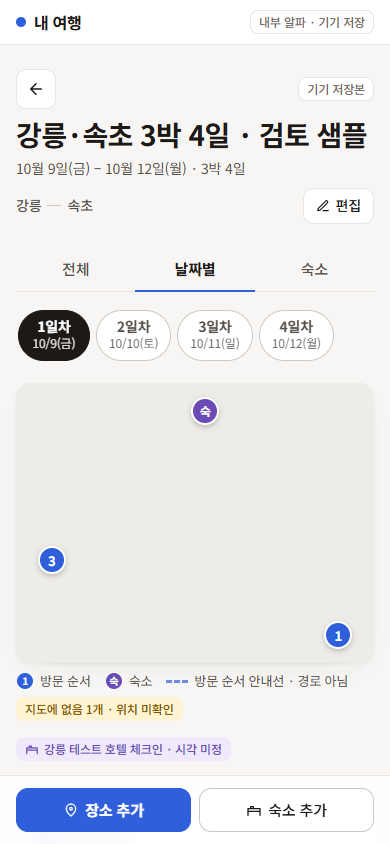
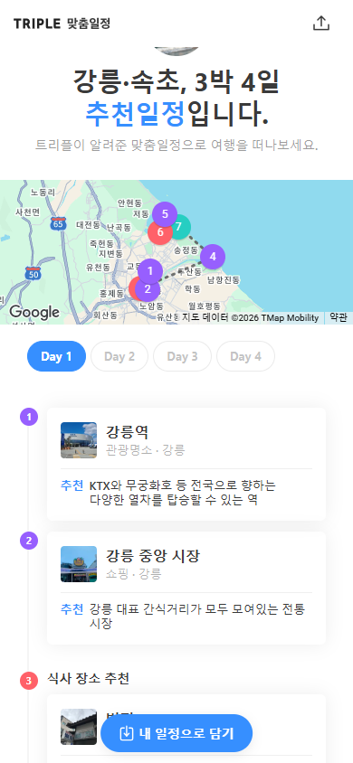

현재 여행 앱과 트리플 비교
2026-09-09 캡처 기준. 현재 앱은 수동 일정 편집 화면, 트리플은 공개 웹의 추천 결과 화면이다. 모바일은 모두 390×844. 현재 앱 지도는 테스트 픽스처로, 실제 지도 품질을 평가하는 화면이 아니다.
현재 앱 · 날짜별 일정
첫 화면에서 장소명이 보이지 않는다. 하단은 장소·숙소 추가 동작.
트리플 · 맞춤 일정 결과
지도·탭 아래 장소 카드 두 개를 읽을 수 있다. 하단은 담기 동작.
현재 날짜별 화면 전체 · 현재 PC 화면 · 트리플 PC 결과 · 현재 전체 보기 · 현재 장소 추가
- 모바일 머리글과 지도를 줄이고 접기/확대를 제공해 첫 장소를 앞당긴다.
- 장소 카드는 이름·분류·체류 계획·필요 상태를 우선하고 보조 편집 동작을 접는다.
- PC는 지도와 일정 목록을 나란히 배치한다. 이는 우리 편집 앱에 맞춘 제안이다.
- 추가 화면은 장소 검색·선택을 앞세우고 선택 입력은 펼쳐 보기로 줄인다.
색상은 현재 앱의 파랑을 기준으로 비교했다. 사진은 사용 권한이 확인된 장소 이미지가 있을 때만 도입한다. 트리플 이미지·문구를 제품 자산으로 복사하지 않는다.
트리플 공개 참고 페이지 · 상세 검토 보고서